See the Liberty Bound website for more pictures on the tour
AUGUST - OCTOBER 2004
From Sea to Shining Sea
| 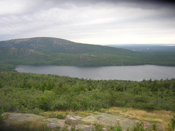 | 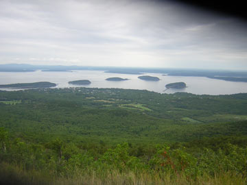 | 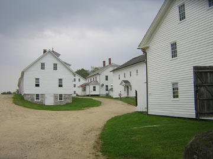 |
| Arcadia National Park, ME | Another shot of the beautiful Maine | Shaker Village in NH |
| 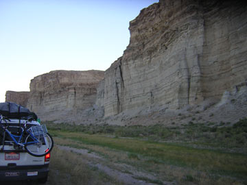 | 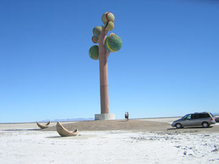 | 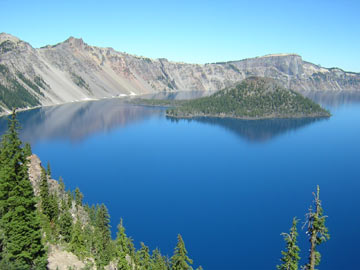 |
| Beautiful cliffs in the Midwest -- Iowa, I think... it was a LONG trip! | Interesting Sculpture in Nevada | Crater Lake, Oregon |
| 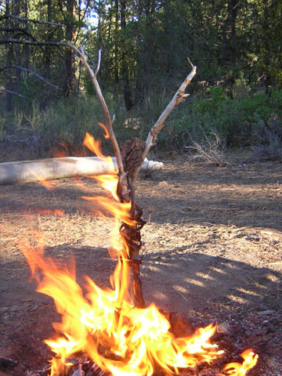 | 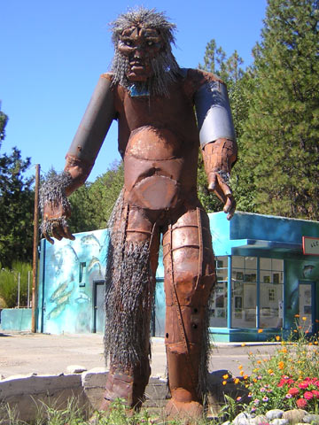 | 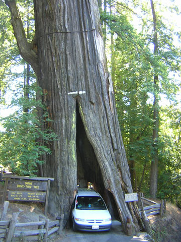 |
| Since I missed "the burn" this year at Burning Man this year, I decided to make my own man and burn him... on our land in Southern Oregon. | A great sculpture of BigFoot somewhere along the Klamath River in California | Driving through ancient redwoods |
| 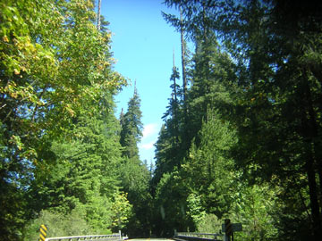 | 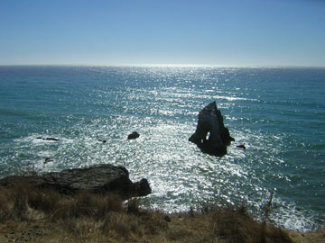 | 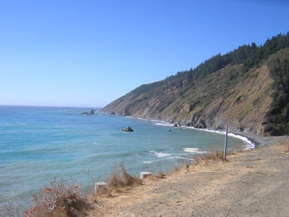 |
| The magical redwood forest on the Avenue of the Giants, Northern CA | Sun on the Pacific, Northern CA | Mendocino Coast, California |
| 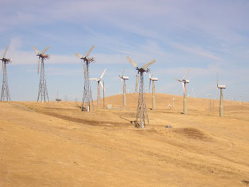 | 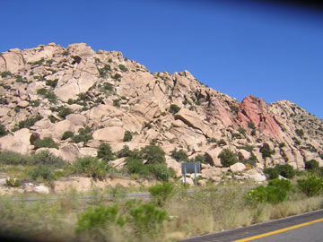 | 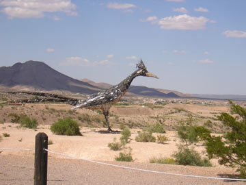 |
| Alternative Power Windmills, Southern CA | Beautiful rock formations, AZ | Cool Roadrunner Sculpture, AZ |
| 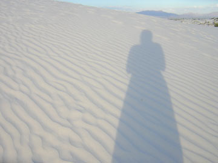 | 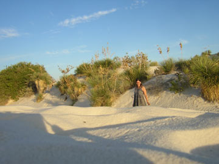 | 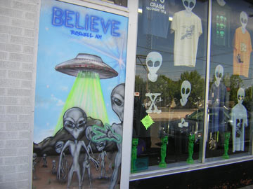 |
| White Sands National Monument, NM | Me on the White Sands | I BELIEVE -- Roswell, NM |
| 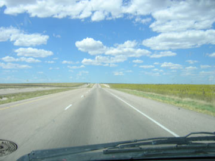 | 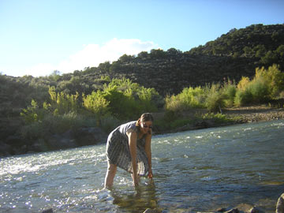 | 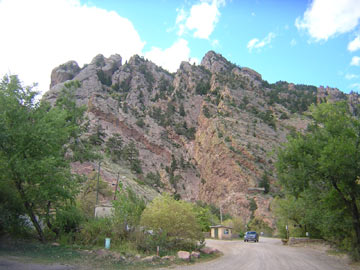 |
| The Open Road - something I saw A LOT OF -- this one in New Mexico | Cooling off in a small creek in Southern Colorado | Part of the Rocky Mountains, CO |
| 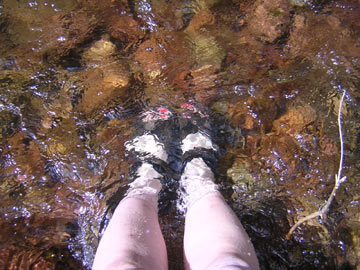 | 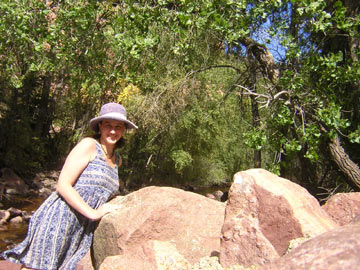 | 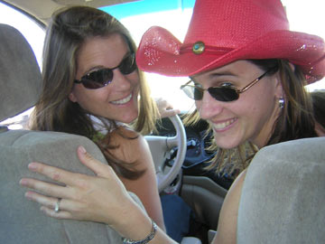 |
| Me in a healing creek south of Boulder, CO | Did I mention I love water?! | Short break in TX with my family |
| 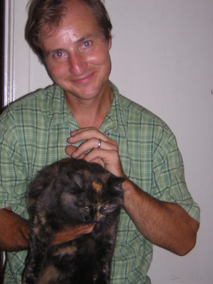 | 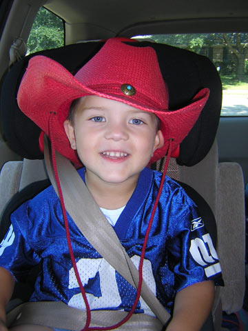 | 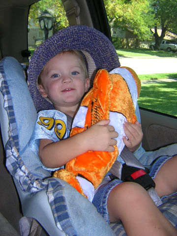 |
| The special men in my life: My loving husband (with one of our kids, Shadow) | Luke | Dylan |
| 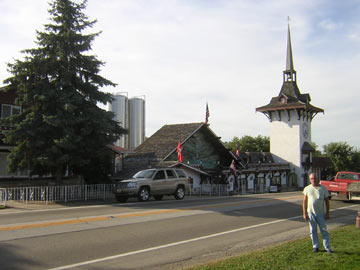 | 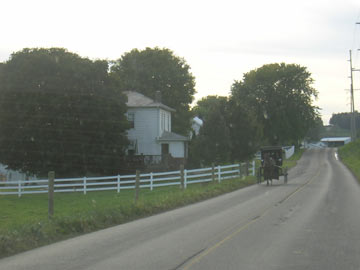 | 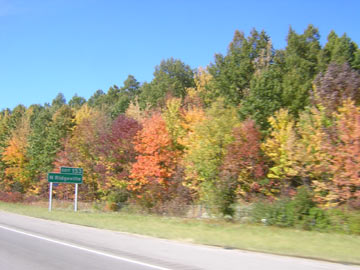 |
| My Dad in Amish Country, Southern OH | Horse & Buggy in Amish Country, OH | The Glory of Autumn, Northern OH |
| 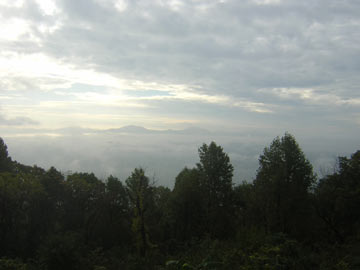 | 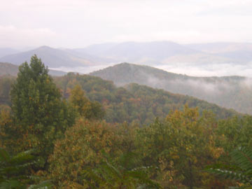 | 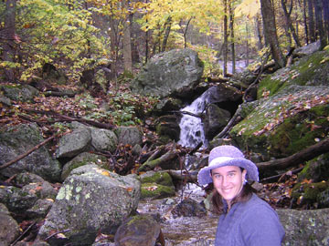 |
| Sunrise in the Blue Ridge Mountains, Virginia | Almost heaven... Blue Ridge Mountains | Me by, yes, more water! |
 |
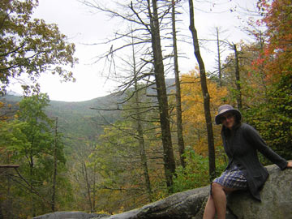 |  |
| Overlooking a valley in the Blue Ridge Mountains | More Autumn Glory (I was BLOWN AWAY by the Blue Ridge Mountains!) | Blue Ridge Mountains, Lima Cove Viaduct, North Carolina |
| 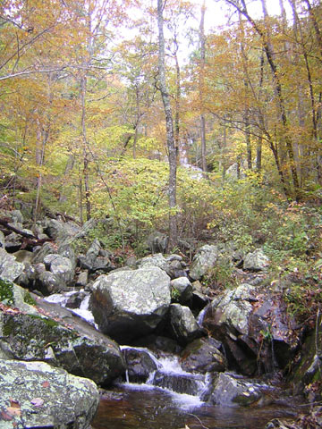 | 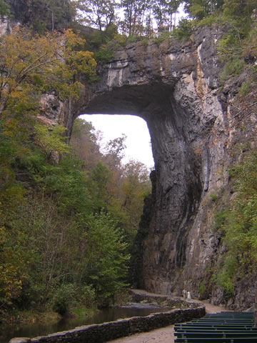 | 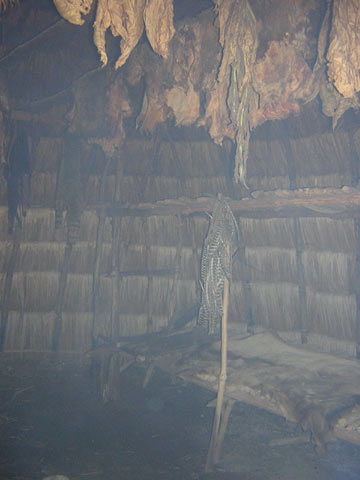 |
| Another beautiful creek, I hiked down to this one (1.8 miles) NC | The Natural Bridge in VA (one of the 7 Natural Wonders of the World!) | Inside a WigWam at the Natural Bridge park |
My cross country route - pink, trip to Nova Scotia in May; purple, Sea to Shining Sea tour for Liberty Bound.